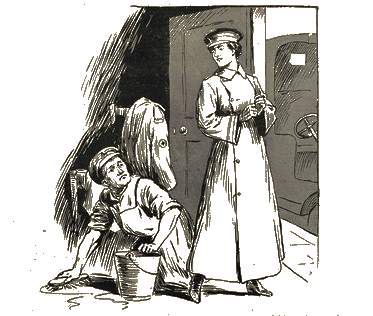
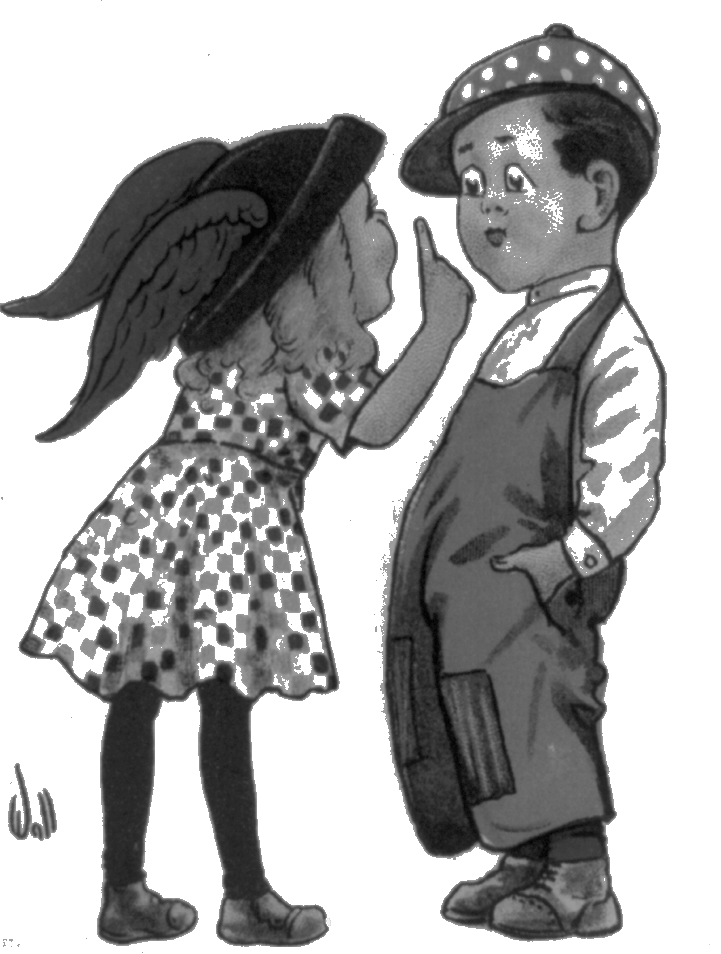

why not votes for two as well as jobs for two?

WOMAN (just off to drive a 4-ton motor lorry): "Now that we've exchanged
jobs and your vote will be used to protect my interests in the Home, don't
you think had better give me a vote too, in order to protect your
interests in the Labour market?"
Contents
our cartoon1
the outlook1
questions19
let them out!26
women's wages31
the law of conflict35
treasure's note37
the fund39
campaign40
general news44
To the brave women who today are fighting for freedom;
to the noble women who all down the ages kept the flag flying
and looked forward to this day without seeing it; to all women
all over the world, of whatever race, or creed, or calling, whether
they be with us or against us in this fight, we dedicate this paper.
Twentieth monthly meeting on October 24 and 25 at the City Church
The Outlook
The Home Office authorities have for some days had under consideration
the speech delivered by Mrs Pankhurst at Cardiff on Wednesday, the night
following the bomb outrage. In this speech Mrs Pankhurst recalled that,
when the Franchise Bill was withdrawn, "I told them that I was prepared
to accept responsibility for all acts to which women felt themselves driven."
She is reported as saying: "I have incited; I have conspired; and I say
this - that the authorities need not look for the women who have done what
they did last night, I accept responsibility for it. If tomorrow I am
arrested for what happened and sent to penal servitude, I shall prove
in my own person that the punishment cannot be carried out. If they send
me for 5 years, 10 years, or 20 years, I shall not stay. I shall at once
hunger strike. If they torture me with force-feeding, that cannot last
very long; they cannot keep me alive very long; and they will have to
let me die or let me go. If I drop out of the fight hundreds will take
my place."
"We are here, not beacause we are law-breakers;
we are here in our efforts to become law-makers!"

For the work of a day,
For the taxes we pay,
For the laws we obey,
we want something to say!